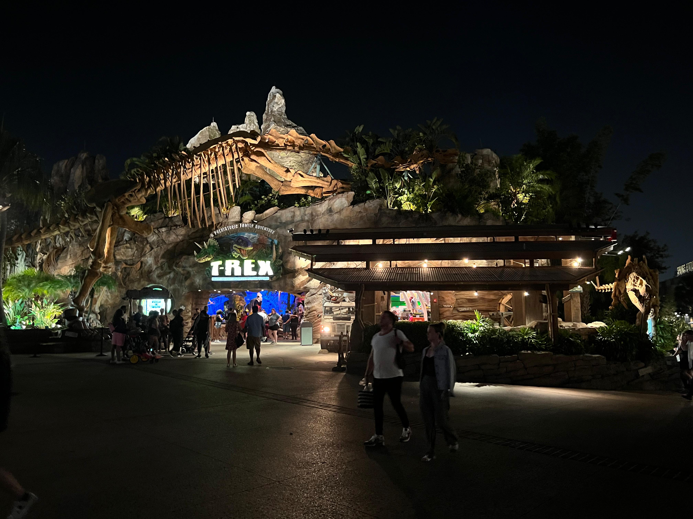
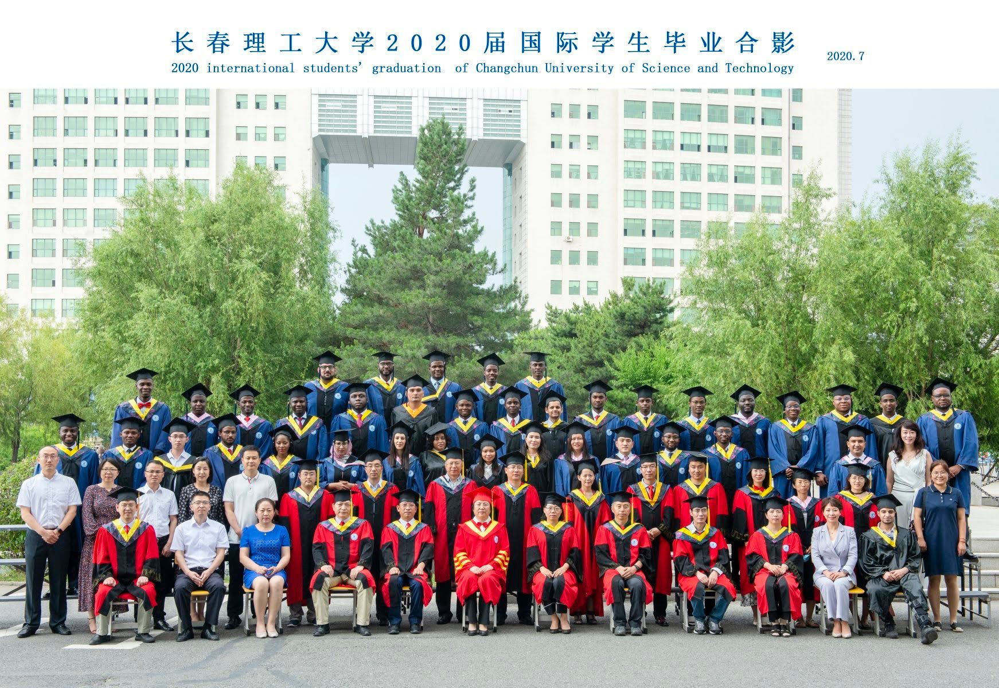
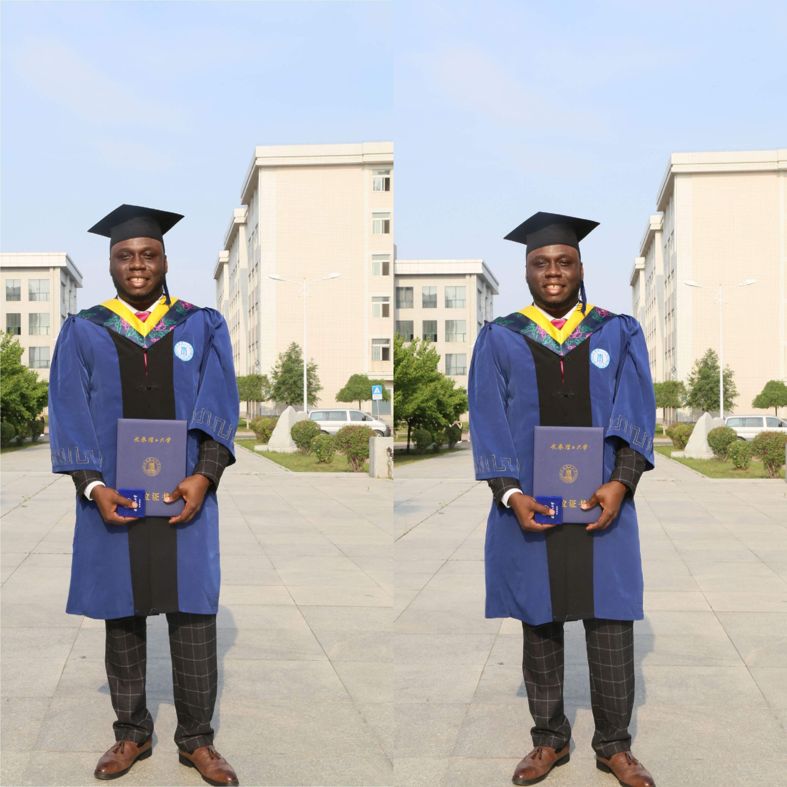
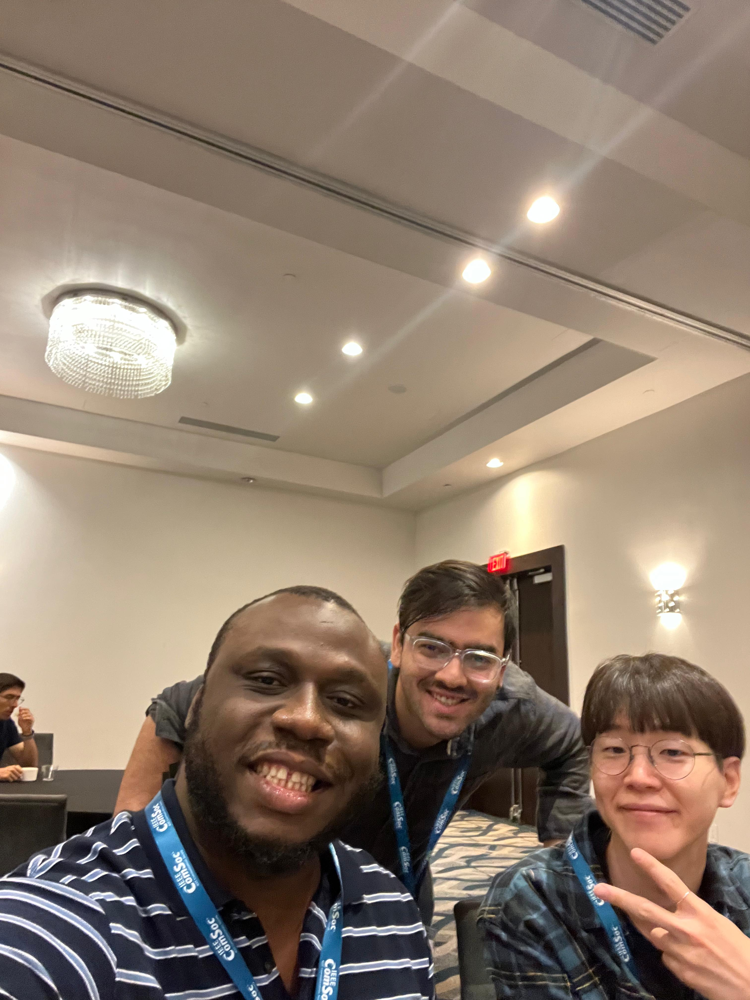
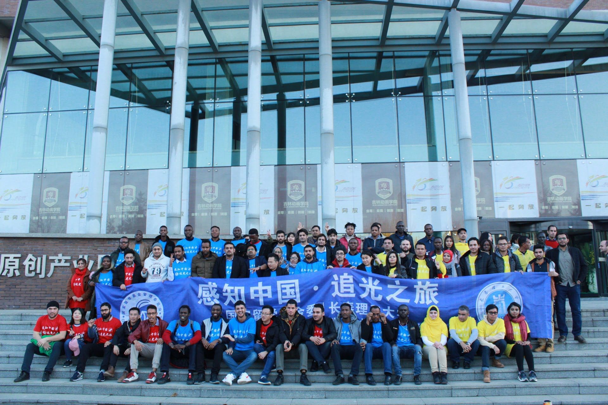
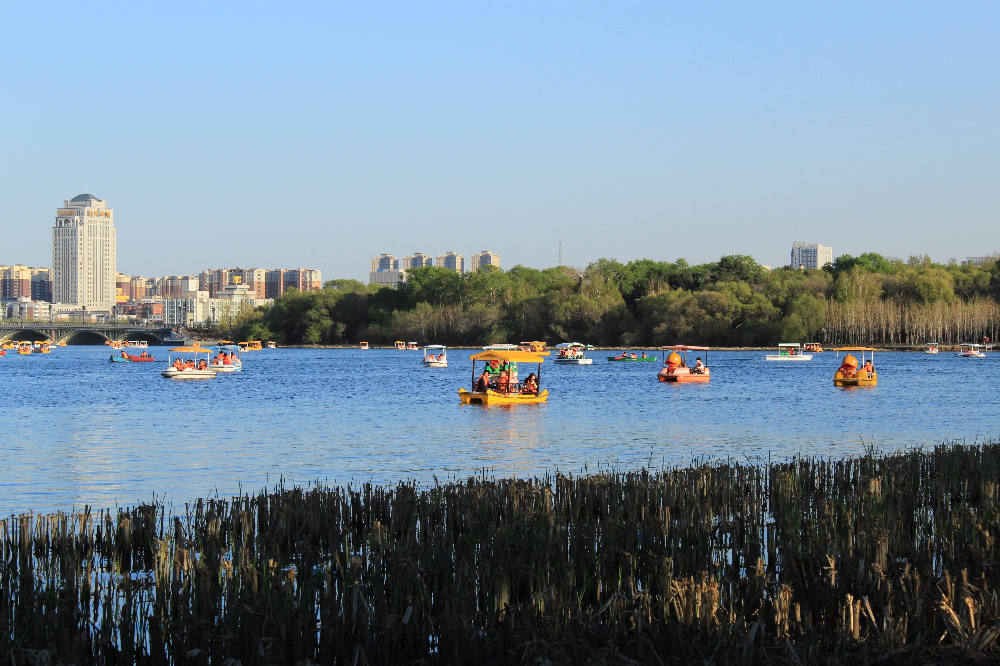
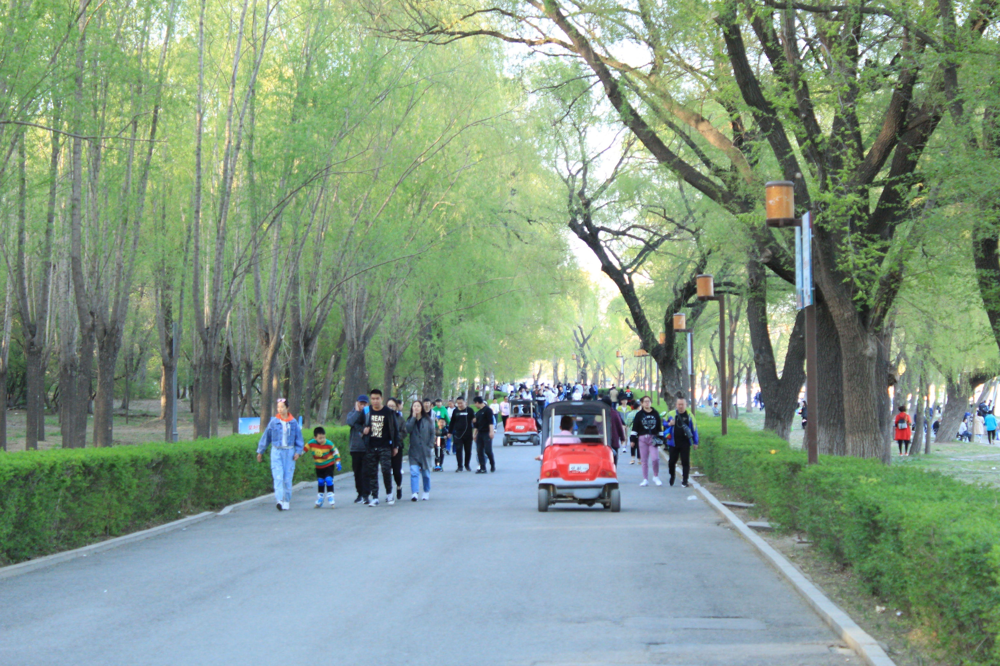
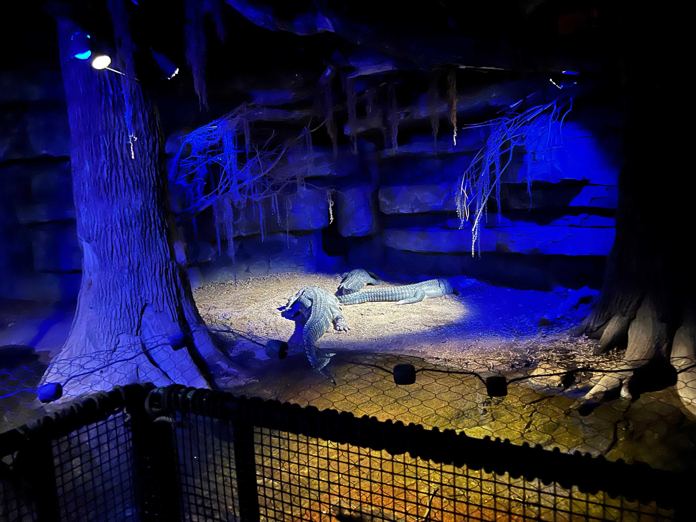
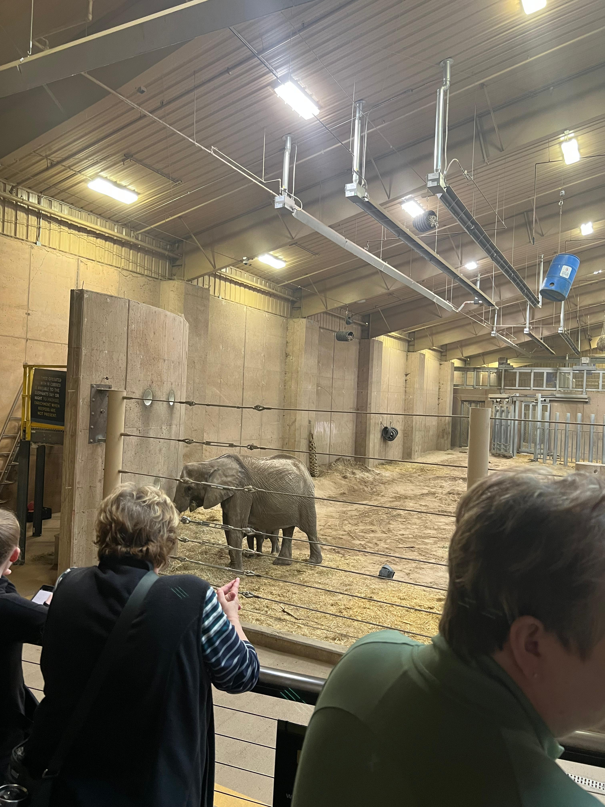
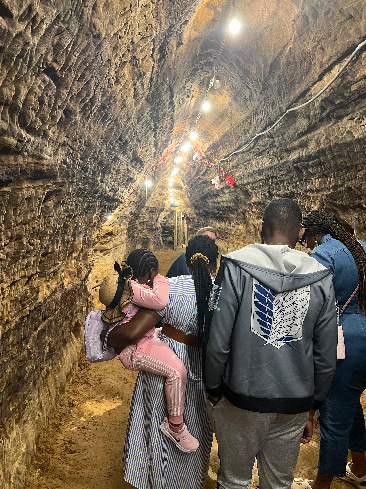

About Me
- School of Computing
- University of Nebraska - Lincoln
- Office: 114c Schorr Center, 1100 T St, Lincoln, Nebraska 68588-0150
- Phone: (531) 229-7046
- Emails: oguchiebuka919@gmail.com, eoguchi2@huskers.unl.edu
I am a 4th-year Ph.D. candidate in Computer Science and Engineering at the University of Nebraska, Lincoln, advised by Prof. Nirnimesh Ghose. I received my M.S. in Computer Applied Technology from the Changchun University of Science and Technology, China, in 2020, advised by Prof Fang Ming. I obtained my B.Eng in Electronic and Computer Engineering from Nnamdi Azikiwe University, Awka, Nigeria, in 2016, Advised by Prof. Akpado K. Aghaegbunam. My research focuses on cybersecurity across the agricultural, vehicular, machine learning, and molecular sectors. I specialize in ensuring message integrity and authentication for commercial off-the-shelf (COTS) wireless devices, utilizing expertise in machine learning and security protocols.
Download My CVRead My Research Statement
Read My Diversity Statement
Read My Teaching Statement

Research & Publications
- "STUN: Secret-Free Trust-Establishment for Underground Wireless Networks," in Proc. of IEEE INFOCOM Wrkshp on Wireless-Sec: 5G & Beyond Wireless Security, Virtual Event, May 2022. PDF | PPT
- "VET: Autonomous Vehicular Credential Verification using Trajectory and Motion Vectors," in Proc. of EAI International Conference on Security and Privacy in Communication Networks (EAI SecureComm 2023), Hong Kong, October 2023. PDF | PPT
- "Soil Assisted Trust-Establishment For Underground Internet-of-Things," under submission to ACM Internet of Things Journal, February 2024.
- Poster: "STUN: Secret-Free Trust-Establishment for Underground Wireless Networks," Nebraska Research Days, Office of Research & Economic Development, Graduate Research Exhibition, In-Person Event, March 2023. PDF
-
Thesis: "Smoke Recognition Algorithm Based on ResNet and GoogleNet Networks," Masters in Computer Applied Technology, Changchun University of Science and Technology, China, 2020.
This thesis explores advanced image recognition algorithms for smoke detection using ResNet and GoogleNet networks, providing a novel approach to early fire detection systems.
Download PDF
Projects
- Agricultural IoT Security: Tackling the essential issue of building trust within the framework of developing agricultural IoT network applications. Strategies integrate physical layer features with cryptographic primitives. In a contemporary farm environment, this research creates novel methods that allow secure operations for wirelessly equipped, scalable, and interoperable equipment. This will help reduce significant damage to farm production due to corruption of the sensitive real-time data transmitted and received by Ag-IoT sensors underground to the Over-the-Air actuator during the smart agricultural process. Thereby increasing crop yield by efficiently using human labor and natural resources. Funded by NSF under grants (CNS-2331191, CNS-2225161, CNS-1619285, ECCS-2030272).
- Autonomous Vehicle Security: The development of autonomous vehicles has advanced significantly; unmanned aerial aircraft, driverless cars, and many more are enhancing and securing our way of life. But this also creates a new avenue for attack: an enemy can now seize control of these self-governing devices and create potentially fatal situations. We use trajectory and motion vector data and the Doppler effect to ensure message integrity and authentication of autonomous vehicles. We formally analyze the correctness and robustness of VET using matching conversations. Our experimental tests and evaluations show that our protocol detected and removed adversaries well. Funded by Nebraska Center for Energy Sciences Research (NCESR).
- Radio Frequency Fingerprinting - On-going: Research on fingerprinting in underground networks for message integrity verification. This offers the cryptographic identities a sort of second-factor authentication. To solve this issue, we identify wireless physical layer characteristics for devices and locations using machine learning methods. Funded by NSF under grants (CNS-2331191, CNS-2225161).
- Molecular Communication Security - On-going: Research on molecular communication to guarantee message integrity verification. We tackle the challenge of securing nanodevices and sensors that operate in biological environments that are different from conventional electromagnetic environments. To solve this issue, we investigate a lightweight approach to securing the communication between absorbing Alice and Bob nanodevices in the presence of an attacker, Eve, whose main goal is to bootstrap into the molecular channel to cause various harm. We study the various attacks Eve can perform and propose possible ways to secure the molecular channel. This will facilitate efficient drug delivery and nanomedicine and help to prevent bio-terrorism from causing harm to the water and environment. Funded by NSF under grants (CNS-2331191, CNS-2225161).
Experience
- Teaching Assistant: Cryptography & Security course CSCE 477/877
- Organized experiments, graded homework, and labs, and supported students in mastering complex topics.
- Enrollment: Undergraduate: 21, Graduate: 3 - Fall 2022
- Download Course Syllabus (PDF)
- Download Course Schedule (PDF)
- Internship: Electronic Development Institute, Awka, 2015
- Engaged in projects involving remote control of home appliances using infrared sensors.
- Mentorship Programs:
- Google CS Research Mentorship Program (CSRMP)
- The Institute for African American Mentoring in Computing Sciences (iAAMCS)
- Mentees at University of Nebraska Lincoln:
- Graduate Student: Mr. Hakim Lado - Ph.D. - Fall 2023
- Undergraduate Student: Ms. Arielle Monson, Senior, Fall 2022--Spring 2023
Awards and Honors
-
Mary E. and Elmer H. Dohrmann Fellowship, 2023
- University of Nebraska Lincoln
- 1 out of 6 recipients for academic/leadership excellence
-
Chinese Government Scholarship, 2020
- Changchun University of Science and Technology
- 1 out of 500 recipients around the globe each year
Summer Schools and Certifications
- Machine Learning Summer School, University of Oxford, Aug. 2022 (View Certificate)
- Machine Learning Summer School MLSS-Indo 2020, Indonesia, Aug. 2020 (View Certificate)
- AI and Games Summer School MLSS-Indo 2020, Indonesia, June. 2024
- CS 50AI, Harvard University via edX, Jan. 2021
- Microsoft Azure ML Scholar, Microsoft, Sept 2020
- Stanford Code-in-Place (CS 106A), Stanford University, May 2020
- Biomedical Responsible Conduct of Research, CITI Program, Sept. 2023 (View Certificate)
- Verified International Academic Qualifications, Sept 2020 (View Verification)
- AWS Machine Learning Foundations, Udacity, July 2020 (View Certificate)
Mentorship
- Mentorship Programs:
- Google CS Research Mentorship Program (CSRMP)
- The Institute for African American Mentoring in Computing Sciences (iAAMCS)
- Mentees at University of Nebraska Lincoln:
- Graduate Student: Mr. Hakim Lado - Ph.D. - Fall 2023
- Undergraduate Student: Ms. Arielle Monson, Senior, Fall 2022--Spring 2023
Resources
Conference Statistics
- Networking Journals and Conferences Ranking
- Networking Conferences Statistics by K. Almeroth
Security Journals and Conferences Ranking
- Computer Security Conferences Statistics by G. Gu
- Crypto and Security Conferences Ranking by J. Zhou
Research and Writing Guidelines
- How to be a winner — advice for students starting into research work
- So Long, and Thanks for the Ph.D.! by Ronald T. Azuma
- The Craft of Research
- Elements of Style
Software and Tutorials
Media & Fun Stuffs
Media Coverage
-
Innovating Cybersecurity and Computer Networks: Visionary work of Ebuka Philip Oguchi
A detailed feature on my contributions to cybersecurity innovations. Read the full article at Vanguard Nigeria.
-
Transforming agriculture, autonomous vehicles: The revolutionary research work
An in-depth exploration of my research impacting agriculture and autonomous vehicle technology. Full details available at Tribune Online.
Personal Projects
-
WEP and WPA2 Crack
Performed cryptoanalysis on personal wireless networks to crack and access network passwords. Skills gained: Python, Cryptography, Linux, Hacking, Hardware Configuration, Cryptoanalysis.
Project details and code can be found on GitHub.
Download PDF -
Exploring Security Measures for Molecular Communication
Explored error correction and detection techniques using lightweight mechanisms in molecular environments. Skills gained: Python, Information Theory, Molecular Communication.
Project details and code can be found on GitHub.
Download PDF -
Mutual Authenticated IoT-to-Smartphone Communication with a Trusted Server
Developed a secure authentication technique against man-in-the-middle and replay attacks. Skills gained: Proverif, Encryption and Decryption, Python, Symmetric and Asymmetric Key Encryption, Mutual Authentication, Hashing, Protocol Design.
Project details and code can be found on GitHub.
Download PDF -
Sensor Data Gathering and Cloud-based Transmitter Prototype System
Developed a prototype system to automatically detect sensor types and send the correct value and unit to the cloud. Skills gained: Arduino, C Programming, Temperature Sensor, Soil Moisture Sensor, Circuitry Design and Soldering, Microsoft Azure Cloud, Antenna Design.
Download PDF
Fun Stuffs
- Disney Spring Shopping Complex - Lake Buena Vista, Florida, USA 
-
Happy Independence Day Celebration - Oak Lake Park, Lincoln, USA

- MSc Graduation Pictures - Changchun University of Science and Technology, China  
-
BSc Graduation Picture - Nnamdi Azikiwe University, Awka, Nigeria

- IEEE Conference on Communications and Network Security (IEEE CNS) - Orlando, FL, USA with peers 
- CSC Scholars International Students Tour and Visitation - Jilin Province, China 
- Fun Visit to Nan hu Park - Nan Hu Park, China  
- Omaha Zoo Visit - Omaha, Nebraska, USA  
- Robbers Cave Tour - Lincoln, Nebraska, USA 